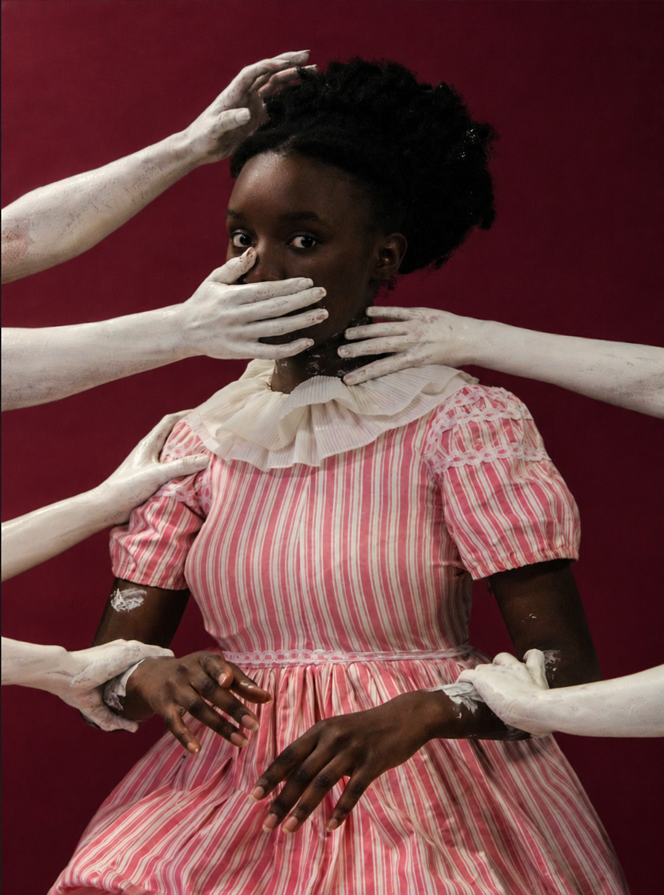
Edição 1
Outubro 2026
EM MINHA PELE
Beleza que resiste, identidade que permanece
O preço de não caber no padrão
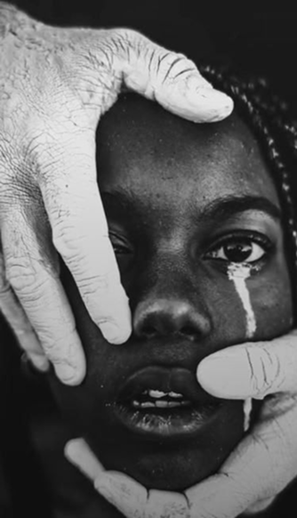
A beleza
não pede
licença.
Entre o olhar que limita e o corpo que se afirma, reconhecer nossos traços é também recuperar o direito de existir.
Além do espelho
A pele, o cabelo e os traços do rosto não são detalhes a corrigir. São parte de uma história que atravessa afetos, memórias e modos de estar no mundo.
Quem decide o que é belo?
Uma leitura sobre padrões, pertencimento e a liberdade de construir a própria imagem.
“Nossos traços carregam uma história que nenhum padrão de beleza pode apagar.”
Autores da revista
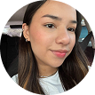
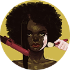
Beatriz H Carvalho
Gustavo H L Munhoz
Isabella C Camargo
Luigi A Biondo
Natalia C L Flores
Rodrigo Bolgheroni
ÍNDICE
01Editorial 02O direito de existir sem mudar 03Antes de se amar, alguém te ensionou a se esconder 04Quando o cabelo vira motivo de punição 05Quem aparece quando a beleza é anunciada? 06O belo também tem uma história 07Perspectiva de Frantz Fanon 08Perspectiva de Nilma Lino Gomes 09Quando a aparência masculina vira suspeita 10O peso imposto às mulheres negras 11Um rosto diante da tela 12A insegurança também dá lucro 13Tons que não chegam às prateleiras 14O padrão é uma questão política 15Beleza também é memória 16Marcha do Orgulho Crespo 17Outras formas de dizer: existimos 18O que precisa mudar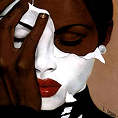
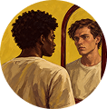
a sociedade brasileira, os padrões de beleza não são mero reflexo de gostos individuais, mas expressão de uma hierarquia racial herdada do colonialismo, que associou a branquitude ao belo e à respeitabilidade. Ainda hoje, a mídia reproduz essa lógica ao privilegiar padrões eurocêntricos e sub-representar traços negros, perpetuando a desvalorização da cultura afro-brasileira e afetando a construção da identidade e do pertencimento de pessoas negras. Com isso, busca-se evidenciar os mecanismos estruturais que sustentam o racismo estético e a necessidade de transformá-los. A exclusão de traços negros da representação da beleza não surgiu por acaso. Ao longo da história, valores associados à aparência europeia foram elevados a sinais de beleza, prestígio e adequação, enquanto características negras foram marginalizadas. A mídia prolonga essa desigualdade ao decidir quem protagoniza suas narrativas e quais corpos merecem destaque. A Pesquisa TODXS, da ONU Mulheres, apontou que, em 2021, mulheres negras correspondiam a 27% das protagonistas femininas na televisão. A ONU Mulheres contextualiza esse dado ao apontar que cerca de 56% da população brasileira se autodeclarava negra. Embora os números correspondam a recortes diferentes, o contraste expõe a distância entre a composição racial do país e as imagens que recebem visibilidade. Quando a pele clara, o cabelo liso e os traços europeus dominam as telas, a mídia não apenas reflete uma hierarquia antiga, mas ajuda a mantê-la viva, apresentando a branquitude como padrão universal e empurrando outras formas de beleza para a invisibilidade. O impacto dessa hierarquia ultrapassa as telas e alcança a relação das pessoas negras com a própria aparência. Em "Pele negra, máscaras brancas", Frantz Fanon analisa como o olhar racista pode levar pessoas negras a se enxergarem por critérios que as inferiorizam. Essa violência cotidiana aparece quando o cabelo crespo é tratado como inadequado ou pouco profissional, enquanto o cabelo liso é associado à aceitação e ao prestígio.
Nilma Lino Gomes, ao compreender o cabelo negro como expressão de identidade e pertencimento, evidencia que desvalorizá-lo significa também atacar referências culturais e históricas. Sob essa pressão, pessoas negras podem ser levadas a esconder ou modificar traços próprios para escapar da rejeição. Assim, a desigualdade midiática e a discriminação cotidiana não apenas restringem quem é visto como belo, mas também tentam impor quais aparências são aceitas e quais devem ser apagadas, reforçando uma hierarquia que atinge tanto a representação coletiva quanto a relação individual com a própria identidade.
Portanto, enfrentar o racismo estético exige transformar as estruturas que produzem e difundem padrões de beleza. Para isso, cabe ao Governo Federal, por meio do Ministério da Cultura e em articulação com os órgãos responsáveis pela igualdade racial e pela comunicação pública, instituir critérios de equidade racial para campanhas oficiais e produções audiovisuais financiadas com recursos públicos. A medida será aplicada a essas campanhas e produções, que deverão cumprir metas de protagonismo negro nas obras e de participação de profissionais negros em suas equipes de criação. O cumprimento dessas metas deverá ser acompanhado por relatórios anuais que indiquem quem aparece e quem participa da produção. Resultados insuficientes devem exigir planos corretivos antes da concessão de novos recursos. Essa ação é viável porque o Estado pode vincular o financiamento público a critérios definidos e, ao ampliar a circulação de imagens e narrativas que valorizem os traços negros, contribuirá para contestar a branquitude como padrão universal e fortalecer o reconhecimento da identidade e da cultura afro-brasileiras.
EDITORIAL
3O direito de existir sem mudar
Na reportagem publicada pela Rádio Itatiaia, em outubro de 2025, Jeniffer Lorraine Rodrigues Braulio denunciou ter sido constrangida no trabalho, em Belo Horizonte, por usar o cabelo crespo solto. Segundo seu relato, um diretor da concessionária exigiu que ela o prendesse para apresentar uma “imagem mais limpa” aos clientes. Ela afirmou que não havia uma regra sobre cabelos na empresa e que colegas brancas trabalhavam com os fios soltos. Depois do episódio, procurou atendimento médico e se afastou do trabalho. À reportagem, contou que a mulher chegou a questionar a própria aparência: “Comecei a me questionar se meu cabelo era realmente sujo.” Trata-se de uma denúncia apresentada por Jeniffer; a empresa ainda não havia respondido quando a matéria foi publicada.
A trajetória de Valdemira Telma, conhecida como Negra Jhô, mostra outro caminho diante dessa desvalorização. Em entrevista publicada pelo EL PAÍS em dezembro de 2025, ela lembrou que, na infância, ouvia ofensas por causa do cabelo crespo. Hoje, trabalha com penteados afro em seu salão no Pelourinho, em Salvador. A característica que tentaram fazê-la rejeitar tornou-se parte central de seu trabalho e da forma como afirma sua identidade.
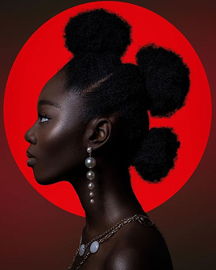
É nesse embate que a canção Respeitem Meus Cabelos, Brancos, de Chico César, faz da vírgula parte da reivindicação: “brancos” não descreve os cabelos, mas chama à responsabilidade quem os julga. O cabelo deixa de ser tratado como detalhe privado e revela uma relação de poder: quem pode definir o que é aceitável e quem precisa justificar a própria aparência. O próprio Chico amplia esse sentido: a imagem dos cabelos alcança também raça, geração, pessoas e ideias. A questão, portanto, não é pedir tolerância, mas exigir respeito.
Nas histórias de Jeniffer e Negra Jhô, essa disputa deixa de ser abstrata. O primeiro revela o custo de ser julgada por esse padrão; a segunda mostra a possibilidade de afirmar a própria imagem. Entre a denúncia e a afirmação, fica a pergunta: por que tantas pessoas ainda precisam defender o direito de usar o cabelo e a aparência com que nasceram?
Antes de se amar alguém te ensinou a se esconder
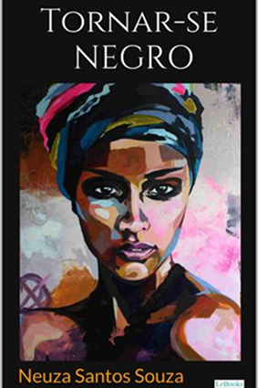
Talvez a parte mais cruel do racismo estético seja fazer alguém acreditar que precisa mudar a si mesmo para merecer o olhar do outro.
Existe uma idade em que ainda não sabemos nomear o preconceito. Somos crianças querendo pertencer, sem entender por que alguns traços são celebrados enquanto outros viram motivo de piada. Queremos ser aceitos e reconhecidos como bonitos.
É nessa idade que certas palavras começam a ficar. O comentário sobre o cabelo que parece brincadeira para quem diz. O apelido que faz todos rirem, menos quem o recebe. A comparação com alguém considerado mais bonito. O elogio acompanhado de um “apesar de”, como se algo precisasse ser compensado.
Talvez ninguém perceba quando algo muda. A criança deseja outro cabelo, evita fotografias ou imagina como seria receber os mesmos elogios. Aos poucos, aprende a enxergar a própria aparência pelos olhos de quem a critica, percebendo que o mundo parece mais generoso com quem se aproxima de determinado ideal.
O que parece um comentário isolado pode se transformar em uma insegurança que acompanha alguém por anos. A vontade de mudar passa a carregar o desejo de evitar a rejeição e finalmente se sentir suficiente.
Em “Tornar-se negro”, a psicanalista Neusa Santos Souza investiga o custo emocional de viver em uma sociedade que transforma a branquitude em ideal de beleza, reconhecimento e sucesso. O racismo influencia não apenas como uma pessoa é vista, mas também como aprende a enxergar a si mesma. Quando a aparência branca é apresentada como modelo, surge um conflito entre quem se é e quem se acredita precisar ser.
Reconhecer esse processo é entender que muitas inseguranças são construídas por padrões que hierarquizam aparências. O problema nunca esteve nos traços de quem cresceu tentando escondê-los, mas em uma sociedade que ensinou a tratá-los como defeitos.
Quem aparece quando a beleza é anunciada?
Um anúncio não vende apenas um produto. Ele organiza desejos, aproxima certas aparências do prestígio e deixa outras à margem. Quando a branquitude ocupa repetidamente o lugar da beleza universal, a presença negra pode surgir como exceção, mesmo em um país marcado pela diversidade racial.
Para observar esse desequilíbrio, o GEMAA, da UERJ, analisou 817 anúncios e 752 modelos em 60 edições selecionadas aleatoriamente da revista Veja, entre 2018 e 2023. Na amostra, 83% dos modelos eram brancos e 17% não brancos. Embora a presença não branca tenha crescido no período, os modelos brancos continuaram maioria. O recorte se limita à revista Veja, mas revela uma desigualdade persistente na publicidade impressa.
Esses números não apontam apenas casos isolados. Para entendê-los, é preciso recusar a ideia de que beleza seja apenas gosto pessoal. No Brasil, os critérios do que é bonito, adequado e respeitável foram construídos em uma história de poder racial. A colonização e a escravização instituíram a branquitude como sinal de prestígio e empurraram traços negros para o lugar da inadequação. Essa hierarquia não desapareceu: continua nos valores e nas imagens que aprendemos a reconhecer como naturais.
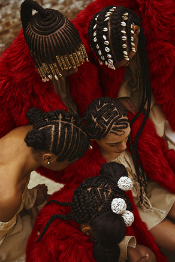
É nesse processo que a mídia atua. Ao repetir algumas aparências como norma e outras como exceção, transforma uma construção histórica em senso comum.
Assim, quando cabelos crespos provocam preconceito e vergonha, o problema não está nos fios nem em uma preferência individual. Está na régua social que associa aceitação à aproximação do padrão branco. Questionar o ideal de beleza também é perguntar quem teve poder para defini-lo e por que tantas pessoas ainda são pressionadas a mudar para caber nele.
Modelos em anúncios · Veja (2018–2023)
O belo também tem uma história
Mudar o padrão exige reconhecer como ele foi construído e por quais instituições continua sendo legitimado.
O belo não nasce fora da história. A colonização articulou diferenças corporais a relações de dominação, elevando características europeias a sinais de civilidade e prestígio. Pele, cabelo e traços negros foram desvalorizados dentro dessa ordem, que procurava justificar a desigualdade também pela aparência.
A abolição da escravidão não desfez a hierarquia racial, enquanto a população negra seguia afastada dos espaços de prestígio, a aparência europeia permanecia associada à beleza, ao progresso e à respeitabilidade.
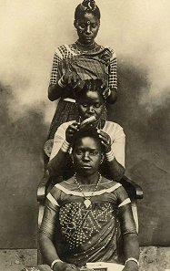
Em “Pele negra, máscaras brancas”, Frantz Fanon examina uma sociedade que faz da branquitude a medida do humano. O olhar colonial não apenas descreve diferenças: distribui valor, reconhecimento e autoridade. A pessoa negra pode ser confrontada com uma imagem de si construída de fora, antes mesmo de falar. A aparência passa a carregar sentidos que não escolheu e que procuram reduzir sua existência a uma categoria racial.
Interiorizar essa inferiorização não significa ter uma falha íntima ou uma patologia individual. É viver sob relações que repetem a promessa de aceitação pela aproximação a padrões brancos. Alterar a fala, o cabelo ou a apresentação pode tornar-se uma tentativa de proteção. Fanon permite perguntar pelo mundo que exige essas máscaras, em vez de julgar quem precisa negociar com elas para estudar, trabalhar ou circular.
Esse legado não significa que todo gosto individual seja idêntico. Significa que as possibilidades de reconhecimento não se distribuem igualmente. Quando uma escola ou empresa associa cabelo crespo à falta de cuidado, uma preferência deixa de ser privada e passa a regular o acesso a direitos e oportunidades.
6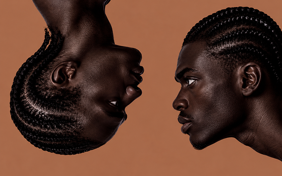
Quando a aparência masculina vira suspeita
Para homens negros, cabelo, pele e roupa podem ser lidos por um repertório que associa a masculinidade negra à ameaça. Não se trata de uma propriedade desses corpos, mas de uma interpretação racializada. Um penteado ou uma peça de roupa não informa intenção, caráter ou conduta. Quando a aparência basta para despertar suspeita, o julgamento antecede qualquer ação e transforma a presença em algo a ser justificado.
Em espaços públicos, essa leitura pode aparecer no acompanhamento por seguranças, em abordagens ou no desconforto de quem vigia a circulação alheia. O custo não se limita ao episódio: pode envolver calcular trajetos, gestos e roupas para evitar conflitos. Essas estratégias não confirmam a suspeita; revelam a desigualdade de um ambiente em que alguns precisam administrar a percepção dos outros para realizar tarefas comuns.
No trabalho e na educação, a mesma associação pode assumir a linguagem da boa apresentação ou da disciplina. Cabelos crespos, tranças e estilos de vestir são avaliados como sinais de inadequação, mesmo sem relação com competência ou aprendizagem. Regras precisam ter finalidade demonstrável e aplicação coerente. Exigir que um homem negro pareça menos ameaçador preserva o preconceito de quem observa, em vez de corrigi-lo.
7Empresas, escolas e serviços de segurança devem distinguir fatos de estereótipos, registrar reclamações e rever práticas. A responsabilidade é de quem discrimina, não de quem foi colocado sob suspeita.
O peso imposto às mulheres negras
Alisar ou não alisar não mede consciência racial. O problema é a exigência de adequação como condição de respeito.
Sobre mulheres negras, a cobrança estética combina raça e gênero. Espera-se uma apresentação cuidadosamente controlada, enquanto seus traços podem ser tratados como excessivos ou inadequados. No trabalho, a linguagem da “boa aparência” pode ocultar critérios que não cobram de todos os corpos o mesmo esforço.
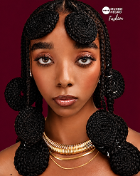
Na pesquisa brasileira Cabelos sem Limites, Como Nós, conduzida pelo Instituto Sumaúma e pela RPretas. Entre as 1.001 mulheres pretas ou pardas, de cabelos crespos ou cacheados, ouvidas em quatro capitais, oito em cada dez consideraram o cabelo uma ferramenta de expressão, embora cerca de 70% perceberam pressão social para alisar os fios. Ou seja, aquilo que afirma identidade também se torna alvo de exigências para ser aceito.
Nilma Lino Gomes compreende o cabelo como símbolo da identidade negra, atravessado por relações sociais e disputas por reconhecimento. Essa leitura ajuda a perceber por que a desvalorização dos fios atinge mais do que a aparência: comentários, regras e olhares podem fazer uma mulher negra sentir que há algo errado em seus traços e levá-la a modificá-los para evitar rejeição.
O cabelo também reúne saberes de cuidado, memórias e referências culturais. Valorizar esses fios não significa exigir que todas os usem de uma única maneira, mas garantir que nenhuma seja punida ou diminuída por sua escolha. Empresas e instituições precisam enfrentar discriminações, revisar regras de apresentação e garantir respeito sem cobrar o apagamento de traços negros.
A pressão também alcança o trabalho. Nos Estados Unidos, o Good Hair Study, do Perception Institute, registrou que uma em cada cinco mulheres negras participantes sentia pressão para alisar o cabelo nesse ambiente — o dobro da proporção entre mulheres brancas. Esse dado ajuda a mostrar como padrões de aparência podem interferir na aceitação profissional em outro contexto. Juntos, os levantamentos evidenciam o peso imposto às mulheres negras: para muitas, expressar a própria identidade pode significar enfrentar cobranças que não recaem igualmente sobre todos os cabelos
O contraste entre expressão e pressão revela uma disputa sobre quem pode definir a própria. Adequar-se pode exigir tempo, dinheiro e disponibilidade emocional. A escolha pelo alisamento, porém, não deve ser reduzida à submissão: trajetórias pessoais não cabem em um julgamento feito a partir do penteado.
A escolha só é livre quando a recusa não custa direitos.
8Um rosto diante da tela
Um filtro pode parecer apenas uma brincadeira, mas suas escolhas têm uma direção. Afinar o nariz, reduzir lábios ou clarear a pele aproxima o rosto de uma norma quando essas alterações são oferecidas como embelezamento. Nem toda ferramenta faz isso, nem todo uso tem o mesmo sentido. A questão é perceber quais traços aparecem como algo a corrigir e quais permanecem como referência silenciosa de beleza.
A circulação de criadores negros amplia repertórios, mas aparecer muito não garante autonomia. Quem cria pode depender de regras de distribuição, monetização e moderação que não controla. A pressão para caber no formato favorecido pela plataforma atravessa a maneira de se apresentar. O desafio é não confundir alcance com poder: uma imagem pode ser amplamente vista e, ainda assim, ter seu contexto e sua autoria enfraquecidos.
Responsabilizar plataformas significa cobrar testes com participação diversa, transparência sobre recursos de alteração facial e canais acessíveis de revisão. Autoria negra precisa estar também no desenvolvimento, na curadoria e nas decisões comerciais. Para quem usa, deve existir escolha informada, inclusive para recusar o filtro. O rosto diante da tela não é um defeito a otimizar é uma presença que tem direito a não ser corrigida.
Algoritmos também podem reiterar hierarquias por meio dos dados com que são desenvolvidos e dos critérios usados para recomendar conteúdos. Esse fenômeno é chamado de racismo algorítmico: a tecnologia acaba aprendendo e reproduzindo os preconceitos que nós mesmos incorporamos nos dados e nas escolhas que a orientam. Seleções pouco diversas, decisões de classificação e incentivos ao engajamento não são neutros. Isso não autoriza afirmar que toda plataforma produz o mesmo resultado. Exige examinar os sistemas, tornar seus critérios discutíveis e permitir que efeitos discriminatórios sejam identificados e contestados.
Autoria negra também significa poder decidir como a tecnologia nos vê.
9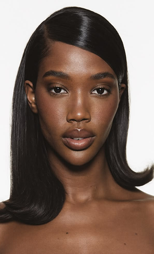
A insegurança também dá lucro
Estimativas comerciais globais para 2024 dimensionam o mercado de clareadores em US$ 11,15 bilhões e o de relaxantes capilares em US$ 698,6 milhões. Esses dados são estimativas de tamanho de mercado, não de lucro das empresas. Esses valores indicam escala econômica e como a indústria lucra em cima da dor e do sofrimento negro.
Quando alisar ou clarear é apresentado como condição de aceitação, a insegurança encontra uma oferta pronta. A promessa pode circular no anúncio, no conselho familiar ou na exigência profissional. O produto não cria sozinho a hierarquia, mas pode se apoiar nela para oferecer uma solução individual a uma pressão social. A crítica começa nessa relação: quem ganha quando a aparência passa a exigir uma correção contínua?
Há desejos, hábitos, preferências e necessidades diferentes por trás de uma compra. Reconhecer esse campo de escolhas é indispensável para não culpabilizar quem alisa o cabelo ou usa um produto para a pele. A liberdade, porém, fica limitada quando apenas uma aparência recebe respeito. É possível defender a decisão individual e, ao mesmo tempo, contestar o ambiente que apresenta certos traços como obstáculo à vida social.
A responsabilidade empresarial envolve linguagem publicitária, segurança e informação clara sobre os produtos. Marcas devem evitar associar pele mais clara ou cabelo mais liso a superioridade, sucesso ou higiene.
Oferecer alternativas de cuidado, sem transformar a diferença em falha, muda o sentido da venda. O enfrentamento também passa por instituições que não condicionem trabalho, afeto e reconhecimento à compra de uma aparência considerada adequada.
Questionar a pressão comercial não é condenar as escolhas de quem consome.
10Tons que não chegam às prateleiras
A base que não corresponde à pele revela um limite concreto da promessa de diversidade. Não basta oferecer uma gradação curta entre claro e escuro: subtons também importam, assim como o desempenho da fórmula. Quando o consumidor precisa misturar produtos ou adaptar um tom inadequado, assume o trabalho que deveria ter sido feito no desenvolvimento. A ausência não é apenas simbólica; interfere no uso cotidiano e no custo da compra.
Em Ocara, um estudo local com 60 estudantes registrou que 53,3% tiveram dificuldade para encontrar base e 83,3% consideraram o mercado inacessível. Os estudumos mostram como a oferta pode falhar para quem está diante da prateleira. O dado local merece atenção sem ser ampliado além do que permite
Diversidade no anúncio e acesso real são dimensões diferentes. Uma linha extensa no catálogo pode ter poucos tons no ponto de venda; uma campanha pode exibir peles negras enquanto o preço impede a compra. Distribuição, reposição e possibilidade de testar o produto precisam acompanhar a imagem. A pergunta não é apenas quantos tons a marca anuncia, mas quais chegam, permanecem disponíveis e podem ser adquiridos em condições viáveis..
Marcas e varejistas podem enfrentar essa distância ouvindo consumidores negros, ampliando testes e acompanhando a disponibilidade por tom e subtom. A participação deve influenciar formulação, estoque e preço, não servir apenas ao lançamento. Informações consistentes ajudam a escolher sem depender de uma tentativa cara. Inclusão deixa de ser um gesto de campanha quando passa a organizar toda a experiência, da pesquisa do produto ao atendimento na loja.
11O padrão é uma questão política
Uma regra dita neutra pode escolher quem pertence.
O padrão de beleza se torna político quando define quem parece apto a trabalhar, aprender ou representar uma instituição. Regras de apresentação podem parecer neutras e, ainda assim, tomar a aparência branca como referência. No trabalho, na escola e na política, a exigência de discrição pode recair de forma desigual sobre cabelos e traços negros. A neutralidade precisa ser demonstrada nos critérios e nos efeitos, não apenas declarada.
Normas de segurança ou higiene têm finalidades legítimas, mas não justificam preferências raciais disfarçadas. É necessário explicar a relação entre a regra e a atividade, verificar sua aplicação e permitir contestação. A avaliação profissional deve considerar competência; a escolar, aprendizagem. Quando o corpo negro precisa ser modificado para parecer respeitável, a instituição transforma um preconceito em condição de participação e limita o acesso a direitos.
Na educação, a Lei 10.639/2003 inclui o ensino de história e cultura afro-brasileira e africana. A Lei 11.645/2008 amplia essa obrigação para abranger também a história e a cultura indígenas. O cumprimento requer formação docente, materiais adequados e presença desses conteúdos no currículo, para além de datas comemorativas. Conhecer trajetórias e produções negras ajuda a questionar as hierarquias que a escola pode reproduzir no cotidiano.
A escola ocupa uma posição decisiva nesse processo. Comentários sobre cabelo, silêncio diante de ofensas e imagens que excluem protagonismos negros educam tanto quanto uma aula. Enfrentá-los requer formação, materiais diversos e compromisso institucional, em vez de pedir à criança que aprenda sozinha a suportar a rejeição.
A mudança exige pessoas negras nos espaços que decidem contratação, currículo e políticas públicas, com condições de influenciar escolhas. Também requer fiscalização, canais de denúncia e revisão de procedimentos discriminatórios. Representar não é apenas aparecer na fotografia institucional. É participar da definição do que se cobra e do que se protege. Sem redistribuir essa autoridade, o padrão continua sendo apresentado como gosto, embora organize oportunidades e exclusões.
Beleza também é memória
Há histórias que passam de mão em mão e também se trançam nos cabelos.
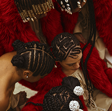
A memória também passa pelas mãos que cuidam.
Em muitas famílias e comunidades negras, cuidar e trançar os cabelos é um gesto compartilhado entre gerações. Mãos que dividem técnicas, histórias e afeto transformam o cuidado em vínculo. Tranças e outros penteados podem carregar referências culturais e afirmar pertencimentos embora seus sentidos variem de pessoa para pessoa.
Essa história também é marcada pela violência. Por séculos, traços negros foram tratados como sinais de inadequação, e o cabelo crespo foi pressionado a se esconder ou se modificar para caber em padrões brancos. Ainda assim, ele nunca foi apenas alvo da rejeição: também é expressão, criação e continuidade.
Ao relacionar corpo e cabelo à identidade negra, Nilma Lino Gomes ajuda a compreender que desvalorizar a estética negra atinge também as memórias e os saberes que ela carrega. Valorizar esses cabelos é reconhecer que beleza pode ser herança viva uma história que permanece no cuidado, nas escolhas e na liberdade de cada pessoa.
A memória não se guarda apenas em documentos. Ela também circula nos gestos de cuidado, nas conversas durante um penteado e nos modos de aprender a lidar com o próprio corpo. Entre gerações, esses encontros podem transmitir repertórios que a desvalorização racial procurou interromper.
Referências africanas e afro-brasileiras são plurais. Não formam uma tradição única, imóvel ou comum a todas as pessoas negras. Seus sentidos variam, atravessam territórios e se transformam com novas experiências. Reconhecer essa diversidade evita converter ancestralidade em uma imagem rígida que todos deveriam reproduzir.
O trabalho de Nilma Lino Gomes oferece uma leitura do corpo e do cabelo como participantes da construção identitária. A dimensão educativa aparece nas relações: aprender a cuidar pode significar encontrar palavras para contestar uma ofensa e referências para reconhecer valor onde antes se ensinou vergonha.
Valorizar a memória não significa fiscalizar escolhas. Quem muda o cabelo ou experimenta outra estética não abandona necessariamente sua história. O enfrentamento ao racismo precisa ampliar repertórios e proteger a liberdade de construir a própria imagem, sem substituir a antiga imposição por outra regra de autenticidade.
13Marcha do Orgulho Crespo
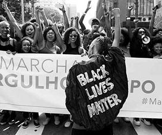
A Marcha do Orgulho Crespo de São Paulo começou em 2015. Ao levar o cabelo crespo ao espaço público como afirmação coletiva, deslocou uma experiência muitas vezes tratada como assunto privado. A rua permite que corpos, penteados e vozes se encontrem sem pedir autorização a um padrão de beleza. A presença não precisa ser uniforme para ter força: pode reunir sentidos diferentes de identidade, memória e participação política.
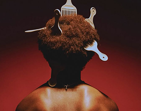
Em 2018, uma lei estadual paulista instituiu 26 de julho como Dia do Orgulho Crespo. O reconhecimento pertence ao âmbito do estado de São Paulo, não a uma lei nacional. Uma data pública pode favorecer memória e debate, mas não substitui ações contra a discriminação. Seu valor depende também do que mobiliza: educação, visibilidade para as reivindicações e compromisso de instituições com o direito de usar o próprio cabelo.
A marcha se conecta a redes de cuidado que circulam em encontros, salões e ambientes digitais. Compartilhar técnicas, experiências e repertórios pode reduzir o isolamento diante da desvalorização. Esses vínculos não apagam divergências nem produzem uma identidade única. Oferecem condições para que escolhas sejam menos solitárias e para que o conhecimento sobre o cabelo crespo seja reconhecido como prática cultural, educativa e profissional.
Além da celebração, a pauta alcança trabalho, escola e acesso a produtos e serviços. O cabelo que recebe aplauso na rua não pode continuar sendo tratado como inadequado em uma entrevista ou sala de aula. A ocupação pública cobra essa coerência. Preservar a dimensão política do orgulho é ligar a festa à mudança das regras, ao acolhimento de denúncias e ao reconhecimento de quem sustenta essas redes no cotidiano.
14Outras formas de dizer: existimos
A afirmação coletiva amplia escolhas: não deve instituir outra obrigação estética
Não existe uma única aparência capaz de provar quem somos.
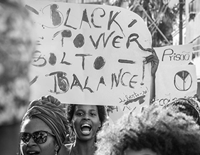
A transição capilar pode envolver cortes, convivência entre texturas e descoberta de cuidados. Também pode trazer hesitação, prazer ou cansaço. Não há um roteiro obrigatório nem uma conclusão igual para todas as pessoas, algumas encontram nesse processo uma aproximação com a identidade negra e com referências antes desvalorizadas; outras o vivem por razões diferentes. Alisar, raspar, trançar ou deixar os fios crescerem são escolhas que ganham sentidos próprios em cada trajetória. Respeitar essa pluralidade é reconhecer que nenhuma aparência deve se tornar condição para pertencer.
Esse percurso, porém, não acontece no vazio. Comentários na escola, no trabalho e até na família podem transformar uma escolha estética em tentativa de escapar do julgamento. Em contrapartida, espaços de acolhimento e troca de saberes sobre cuidados ajudam a construir outras referências. O apoio não deve cobrar uma aparência específica; deve garantir que cada pessoa possa decidir sem medo de punição ou rejeição.
A Geração Tombamento tornou visíveis maneiras de afirmar presença por meio de moda, música e redes. Cores, penteados e gestos podem deslocar o repertório que reduz a juventude negra à falta ou à ameaça. Mais que um estilo fechado, interessa a disputa pela autoria: criar a própria imagem, compartilhar referências e produzir narrativas. Essas expressões são diversas e não representam automaticamente toda a juventude ou toda experiência negra.
A visibilidade, porém, não encerra a disputa. Quando marcas e meios de comunicação incorporam referências negras sem reconhecer quem as criou nem abrir espaço real para esses criadores, a expressão pode virar tendência rentável enquanto as desigualdades permanecem. Por isso, autoria importa tanto quanto presença: jovens negros precisam participar das decisões, da produção e dos benefícios gerados pelas imagens que ajudam a criar.
O que precisa mudar
Enfrentar o racismo estético exige mudar quem decide e com quais critérios. Mídia e empresas devem garantir protagonismo negro também na criação, na direção e na aprovação de campanhas. Acompanhamento precisa considerar papéis, narrativas e condições de trabalho, não apenas contar presenças. O Estado pode incorporar esses critérios a editais, contratos e comunicação pública, exigir prestação de contas e cobrar correções quando houver exclusão.
Empresas de beleza e varejistas precisam assegurar variedade acessível de produtos, com tons, subtons e cuidados adequados. Isso implica pesquisar com consumidores negros, verificar estoque, preço e distribuição e dar resposta às falhas relatadas. Plataformas devem examinar filtros e sistemas de recomendação, esclarecer critérios e oferecer revisão acessível. A participação negra nas decisões é parte dessas medidas, não um recurso visual para anunciar compromisso.
Escolas devem implementar o ensino de história e cultura afro-brasileira, africana e indígena, com formação docente e materiais que sustentem o trabalho ao longo do currículo. Empresas, escolas e órgãos públicos precisam de protocolos para enfrentar a discriminação: acolher relatos, registrar casos, apurar com responsabilidade e proteger contra retaliações. Normas de aparência devem ser revistas para que segurança e organização não sirvam de pretexto ao racismo.
As mudanças precisam chegar às experiências concretas: à campanha que não reduz, à regra que não constrange, ao produto que não exclui e à escola que não silencia. Cada instituição deve acompanhar seus resultados e rever práticas quando a desigualdade persistir. A responsabilidade por enfrentar o racismo não pode recair sobre quem o sofre, mas sobre as estruturas que o reproduzem.
Reparar também não é impor outra forma de ser negro. Cabelo natural, alisado, trançado ou raspado: nenhuma escolha deve servir de prova de identidade, resistência ou pertencimento. Enfrentar o racismo estético é garantir às pessoas negras o direito de decidir sobre a própria imagem e de serem respeitadas sem negociação.
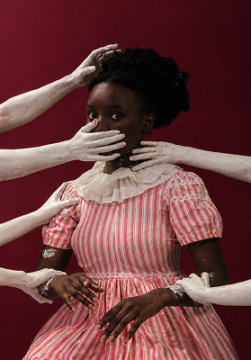
“Enquanto o poder de decisão estiver nas mãos que tentam nos calar, qualquer nova cor nas prateleiras será apenas silêncio disfarçado de avanço.16